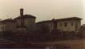
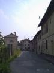
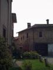

|
Dall'archivio
storico
fotografico della
Associazione
Culturale Zivido



|
La
chiesa di Carpianello � molto antica e, come molti luoghi sacri
della campagna, ha subito diverse vicissitudini.
Fu visitata, verso il 1570, da San Carlo, il quale
annot� alcune osservazioni interessanti che tracciano una sommaria
descrizione: "... che la chiesa se repari in questo modo, cio�
si faccia una Cappella bella et honetsa ove hora � la porta maggiore,
e la porta si faccia ove hora � la cappella. Si faccia l'altare
alla misura, ben ornato con la sua Ancona et altre necessit�. Si
facciano il pavimento e la soffitta e le mura s'imbianchino e le
porte e fenestre si concino con le ferrate e stanghe alle finestre.
Per eseguire le cose soprascritte potransi vender gli arbori che
sono nel cimitero col interessamento del Vicario Foraneo e licenza
in iscritto del Vicario Generale...".
Questa disposizione indic� la volont� dell'arcivescovo
milanese di portare una modifica sostanziale alla chiesa: quella
di spostarne l'entrata dalla parte opposta.
Il perch� � chiaro: le chiese milanesi antiche avevano
sempre l'ingresso che guardava verso la citt�. La descrizione indica
poi chiaramente l'esistenza in Carpianello di un cimitero, certamente
sistemato attorno alla sua chiesa, di cui non se ne sapeva nulla.
E' probabile che le volont� di San Carlo non siano
state eseguite, poich� sappiamo che i Brivio fecero costruire nella
loro casa padronale una cappella votiva, dedicata a San Martino.
Presumibilmente l'antica chiesetta fu abbattuta ed il suo titolo
trasportato nella nuova chiesa.
Dalle rilevazioni di una visita pastorale fatta nel
1602 da Federico Borromeo abbiamo notizia dell'esistenza della nuova
chiesa e del particolare che essa � stata appena costruita: infatti
- si legge nelle relazioni - il suo campanile non � ancora terminato.
Nella visita pastorale del 1609 viene detto che la
nuova chiesa fu fondata da Giacomo Brivio e vi officiava prete Henrico
Bevilacqua; per mantenerlo i fedeli si erano impegnati a pagare
140 lire e i Brivio 60 lire.
Della nuova chiesa sappiamo che Francesco Brivio, il
4 aprile 1628 le assegn� un censo sui suoi beni di 650 lire imperiali,
affinch� si potesse mantenere un cappellano che officiasse tutti
i giorni. Nel 1659 il censo venne trasformato in diritto di juspatronato
dei Brivio, che assegnarono all'oratorio il reddito derivante da
50 pertiche di terreno, oltre al reddito ottenibile dai dazi sull'osteria,
ammontanti in totale, a circa 450 lire imperiali. In una descrizione
del 1690 si legge che questo Oratorio ha un solo altare in legno,
la sua sacrestia ed il campanile, mentre il cimitero non viene pi�
menzionato. E ci� in ragione del fatto che il nuovo edifici religioso
sorgeva all'interno del cortile della casa nobiliare dei Brivio.
I defunti, dopo la soppressione della primitiva chiesa, vennero
trasportati a S.Giuliano.
Nel 1816 la vecchia Cappella, ormai cadente, venne
demolita (sono ancora visibili alcuni affreschi sacri su un muro
di casa Brivio) ed i Recalcati fecero costruire l'attuale chiesa,
pagando per i lavori lire 36.000. Il nuovo edificio, costruito contemporaneamente
a quello di Bolgiano, egualmente per volont� dei Recalcati, fu benedetto
e aperto al culto il 15 aprile 1818.
Della primitiva chiesa di Carpianello conosciamo il
nome di due suoi cappellani: Don Cristoforo De Partin� nel 1546
e Don Antonio della Rocca nel 1592.
Dell'oratorio dei Brivio si conoscono i seguenti cappellani:
|
1609
1630
1640
1653
1659
1660 - 1665
1666 - 1669
1669 - 1673
1678 - 1689
1705
1706 - 1707
1728 - 1745
1762
1820 - 1842
1843 - 1844
1845
1846
1846 - 1848
1848 - 1881
1901
1911 - 1913
1923 - 1926
|
Enrico
Bevilacqua
Bernardo Scotti
Bernardino Sesto
Carlo Galbusera
Giradello
Francesco Corticella
Gian Giacomo Ghelli
Giovan Battista Chieppi
Gerolamo Pania
Paolo Origone
Gian Battista Ceriano
Giovanni Battista Casati
Ludovico Andrea Casati
Pietro Lomazzi
Pietro Barbante
Aronne Dell'Orto
Luigi Maestri
Ferdinando Frattini
Michele Cecconi
Giuseppe (?)
Giovanni Benini
Giuseppe Carimati
|
Dopo
di lui il cappellano di Zivido fu chiamato ad adempiere le funzioni
e soddisfare gli obblighi connessi con la reggenza della cappellania
di Carpianello; essa venne definitivamente unificata con quella
di Zivido nell'anno 1936.
(da Luciano Previato "San Giuliano Milanese,
una storia da raccontare" 1989)
|
|